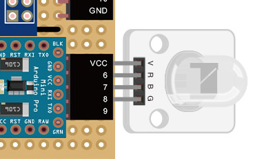
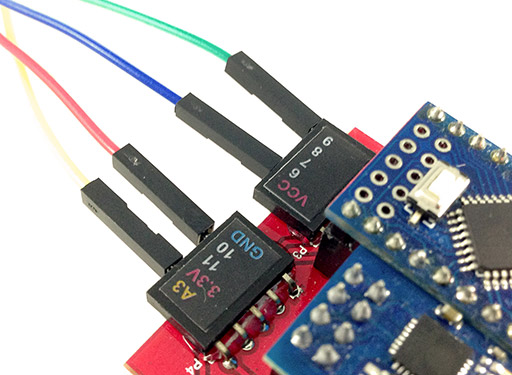

三色 LED 是由紅色、綠色與藍色三種不同顏色的 LED 所組成，因此可以發出最少三種顏色的光，也由於三色 LED 內部含有三顆 LED 燈，所以它具有 VCC、R、B、G 四支針腳，我們也可以分別控制個個顏色的強弱，進一步達到混合顏色的效果。這個範例主要介紹如何設定與使用三色 LED，下一個章節會繼續介紹如何利用三色 LED 做調色盤。
三色 LED 燈的四隻針腳分別是 VCC、R、B、G，因此我們可以直接將三色 LED 接到 Webduino 開發板的 VCC、6、7、8 的腳位即可。


與 LED 範例比較不同的地方，在於我們這裡要引入另外一個名為「rgbled」的 WebComponent，不過寫法和引入的位置仍然是相同的是在 header 裡頭。
<script src="http://webduino.io/components/webcomponentsjs/webcomponents.js"></script>
<link rel='import' href='http://webduino.io/components/webduino/web-arduino.html' />
<link rel='import' href='http://webduino.io/components/webduino/wa-rgbled.html'/>
然後在 body 裡頭放入四個按鈕，分別是紅色 (redBtn)、藍色 (blueBtn)、綠色 (greenBtn) 以及清除 (cleanBtn)，按鈕後方就一樣是先放入 web-arduino，裡頭插上三色 LED 燈 wa-rgbled，device 要換成你手上的 Webduino 開發板 device 名稱。
<button id='redBtn'>red</button>
<button id='greenBtn'>green</button>
<button id='blueBtn'>blue</button>
<button id='cleanBtn'>clean</button>
<web-arduino id='board' device='你的 device 名稱'>
<wa-rgbled id='rgb' red='6' blue='7' green='8'></wa-rgbled>
</web-arduino>
HTML 寫好之後就來寫 javascript，裡頭最重要的是我們運用了 setColor() 這個 api，就如同我們在設定 CSS 的 rgb 顏色一樣，裡頭也是放入三個 0 到 255 的數字，數字越大該顏色就越亮，不過由於受限於部分腳位並沒有 PWM 的設計 ( 脈衝寬度調變，可改變輸出的電壓，可以做出強弱的效果 )，在這個範例只會以亮與滅兩種狀態呈現。
window.addEventListener('WebComponentsReady', function () {
var board = document.getElementById('board');
board.on('ready',function() {
var redBtn = document.getElementById('redBtn'),
greenBtn = document.getElementById('greenBtn'),
blueBtn = document.getElementById('blueBtn'),
cleanBtn = document.getElementById('cleanBtn'),
rgb = document.getElementById('rgb');
redBtn.addEventListener('click', function () {
rgb.setColor(255, 0, 0); //亮紅光
}, false);
greenBtn.addEventListener('click', function () {
rgb.setColor(0, 255, 0); //亮綠光
}, false);
blueBtn.addEventListener('click', function () {
rgb.setColor(0, 0, 255); //亮藍光
}, false);
cleanBtn.addEventListener('click', function () {
rgb.setColor(0, 0, 0); //全部燈光熄滅
}, false);
});
}, false);
如果還有不清楚的，不妨利用這個 快速體驗範例，填入自己 Webduino 開發板的 device 名稱，按下設定，訊息處出現 ready 的話，就可以讓不同顏色的光亮起，亦或是也可以參考這個 jsbin 範例，實際在上面填入 device 名稱並且修改體驗相關效果。